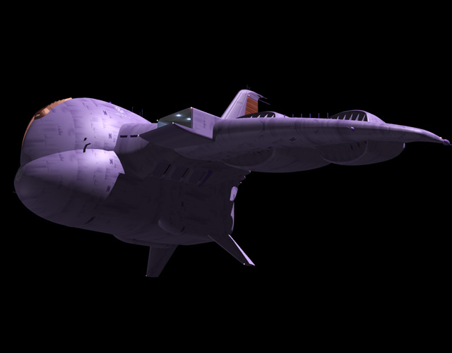

| Gaw Massive Zeon Duchy Airborne Assault Carrier |
|
|  | |
General and Technical Data |
|
|
Unit type: atmospheric attack carrier Operator: Zeon Duchy Dimensions: wingspan 524 meters, length 314 meters Weight: 9800 metric tons Propulsion system: 14 x jet engine Hangar capacity: 2x infantry; 8 aircraft; 6 mobile suits; 6 tanks Launch catapults: 0 Fixed armaments: 3 x 2-barrel mega particle cannon turret; 6x long range fore rocket launcher; 24x 120mm antiaircraft machinegun turret; large bombs Bridge |
 RPG quick stats sheet
RPG quick stats sheet | Technical and Historical Notes | |
|
Developed prior to the war, along with the Dopp fighter, the Zeon's massive Gaw Assault Carrier is a sight to behold. The gigantic aircraft's wingspan is almost half a kilometer wide, and its gigantic jet engines can be heard for miles around.
The Gaws were all built at Side Three before the war, then disassembled, packed into HLVs, and dropped to Earth along with the other Zeon mobile suits and support units in the opening stages of the Earth invasion. They figured prominently in the attack against California Base as well as Odessa. Gaws are multirole airborne fortresses. They can act as high-altitiude command stations, providing Zeon tacticians with a marvelous grasp of an entire battlefield. They're also used for heavy ground suppression with their numerous and highly destructive weapons. They can be utilized to transfer huge amounts of cargo, as well as attack units. The Gaw is armed with three double-barreled Mega Particle Cannons. One is situated between the main fuselage and hangar on each wing, and the third is mounted behind the bridge. All are concealed when not in use, and "pop-up" when preparing to fire. This conceals their existance, and also keeps the Gaw's airframe aerodynamic. Dozens of antiaircraft batteries stipple across its hull; they are virtually a scaled down version of the same system in play on the Zeon's Gwazine-class battleship. It also maintains a large supply of heavy, unguided bombs, typically used in carpet-bombing attacks. An impressive ECM suite also gives it reputable protection against enemy antiaircraft weapon systems. |
|